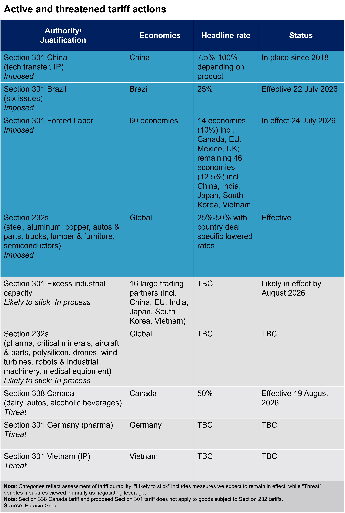
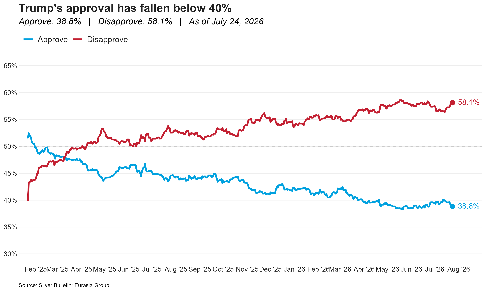
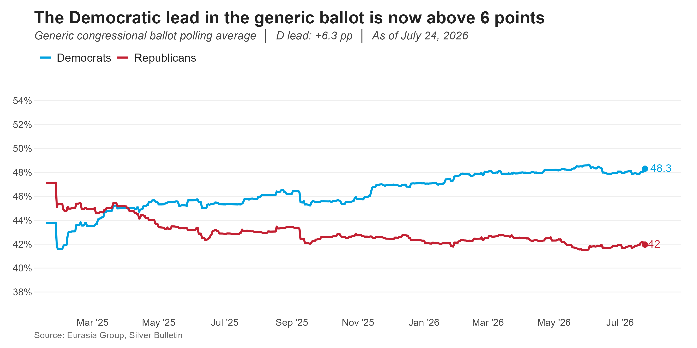

Separating signal from noise in Trump’s latest tariff rollout. The Trump administration’s new Section 301-based 10-12.5% baseline tariff is the replacement for the now-expired Section 122 tariffs, and is the foundation for Trump’s trade policy going forward. The threat of 50% tariffs on Canada, using the wholly untested Section 338 trade authority, is a threat designed to generate leverage in ongoing USMCA negotiations. Additional tariff threats are likely, and as in the hectic days of the initial 2025 tariff rollout, separating signal from noise will be key.
Use of Section 301 to set a new baseline tariff is signal. Using familiar section 301 authority rather than untested and novel IEEPA or Section 122 actions to set a new baseline tariff lays out the foundation of Trump’s trade policy. An additional Section 301 action around overcapacity targeting 16 large trade partners is likely, and will stack on top of the baseline tariff to largely re-impose the tariff rates that were initially set via IEEPA. These new 301-based tariffs are able to be changed, but require a longer run public process and so will prove more stable in terms of both rate and business impact. The implementation of this round of tariffs was in line with Eurasia Group’s expectations that the forced labor tariff would serve as a new global baseline - for additional background, please see US Daily: Overcapacity tariffs likely to layer on top of forced labor baseline 08 June, 2026.
Attention-grabbing threats are noise. The threat of 50% tariffs on Canada utilizes a completely different, and wholly untested, tariff authority and is designed to put Canadian Prime Minister Mark Carney in a weaker position in stalled USMCA negotiations. Trump will likely make additional threats against other trading partners—and likely against Canada—to gain leverage as he tries to secure concessions in ongoing talks and shore up the increasingly shaky framework trade deals reached last year. Expect additional threats as Trump shifts his focus to other trade irritations and negotiations through the year.
The impact on average effective tariff rates from the new action is muted. The new baseline Section 301 tariff rate is slightly higher than under Section 122, but that is partially offset by a slightly wider list of exemptions. By our estimate, the US average effective rate will change from 11% to 11.2%. The additional Section 301 action against16 large trading partners will likely “top up” country-specific rates to roughly where they were under IEEPA (the tariffs that Section 122 temporarily replaced after the Supreme Court struck them down), which would increase the US AETR to around 12.8%.
The administration is creating legal risks for its new tariffs. Section 301 is intended to address specific trade actions from individual countries, and apply tariffs structured to recoup a specific calculated amount of monetary damage to the US. This was the case for Trump’s Section 301 action against China in his first term, but this time around the administration is using a “one-size-fits-all” approach to both the underlying issue (failure to address forced labor) and to setting tariff rates. Either, as well as unresolved questions about the legality of Section 301’s trade authority, presents a potential avenue for legal challenge. Attempts to overturn this latest round of tariffs will likely begin in short order, though it is very unlikely that any court action will delay rollout of Trump’s next 301 expansion.

This week in polling: Trump’s approval drops slightly. President Trump’s approval rating fell by a point this week, from 39.8% to 38.8% in Silver Bulletin’s approval-rating tracker, likely reflecting the impact of the recent spike in US gas prices following the escalation with Iran.
Trump’s approval rating spent most of the spring conflict with Iran in the 38s, and it is likely to hover in that range for as long as the Strait of Hormuz remains closed and gas prices remain relatively high; rising above 40% would likely require a decline in US gas prices to at least below where they were before the recent round of escalation.
The congressional generic ballot also widened slightly this week, with Democrats now claiming a 6.3-point lead. This could widen more as Trump’s approval declines; the gap indicates that Democrats remain the strong favorites in the House race (85% odds to flip the chamber), though the odds of a 2018-style “wave” election are low.
Key Senate polling this week was in Georgia and Maine. In Georgia, Senator Jon Ossoff (D-GA) led his Republican opponent by a healthy margin of 9 points, affirming that Ossoff is the strong favorite to retain his seat. Democrats also got a dose of good news in Maine, where presumptive Democratic Senate nominee Troy Jackson led Senator Susan Collins (D-ME) by three points. That points to a race still leaning moderately to Democrats after the drama of Graham Platner’s exit; the choice of Jackson, who hits many of Platner’s beats, appears to be paying off, even he is still running somewhat below the Democratic baseline in the state.


Fragmented policies will undermine US tech diplomacy. Programs such as the American AI Exports Program and Pax Silica face serious resource constraints without substantial engagement and commitments from the US government.
The Commerce Department’s American AI Exports program aims to support exports of the US AI stack to strategic markets by providing companies expedited export licensing, advocacy, and financing support. However, the initiative is hobbled by heavy bureaucratic burdens, little if any funding, low expectations, and lack of clarity, frustrating stakeholders.
On the supply side, Pax Silica has gained some momentum, with 24 members including the EU, but it has produced few deliverables. Without additional funding, the program is unlikely to materially advance its objectives of building a more resilient semiconductor supply chain – the $250 million initiative is intended to catalyze an improbable $1 trillion in investments.
Quote of the Day
“I don’t see this court that is just like, ‘We’re just going to rubber stamp what the current administration does’. You know, quite the opposite. I think that’s a bad rap.” – Supreme Court justice Elena Kagan, a liberal, speaking at a judicial conference yesterday, defending the view that, though the Supreme Court has often ruled in favor of Trump administration policies, it remains fully independent of the White House. Remarks like Kagan’s, though, won’t do much to quell concerns on the left that the Supreme Court’s conservative majority is a threat to Democrats’ policy agenda; expanding the court to eliminate that majority will be a key talking point from the progressive left—and from some closer to the center of the party—ahead of the 2028 election.
On the Radar
27 July – 28 August: House on recess
4 August: Michigan primary election
10 August – 11 September: Senate on recess
19 August: Section 338 tariffs on Canada go into effect
3 November: National midterm elections